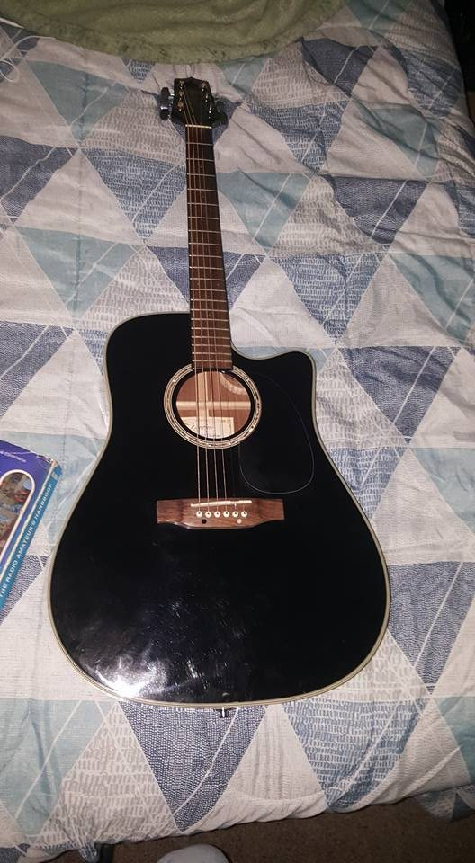
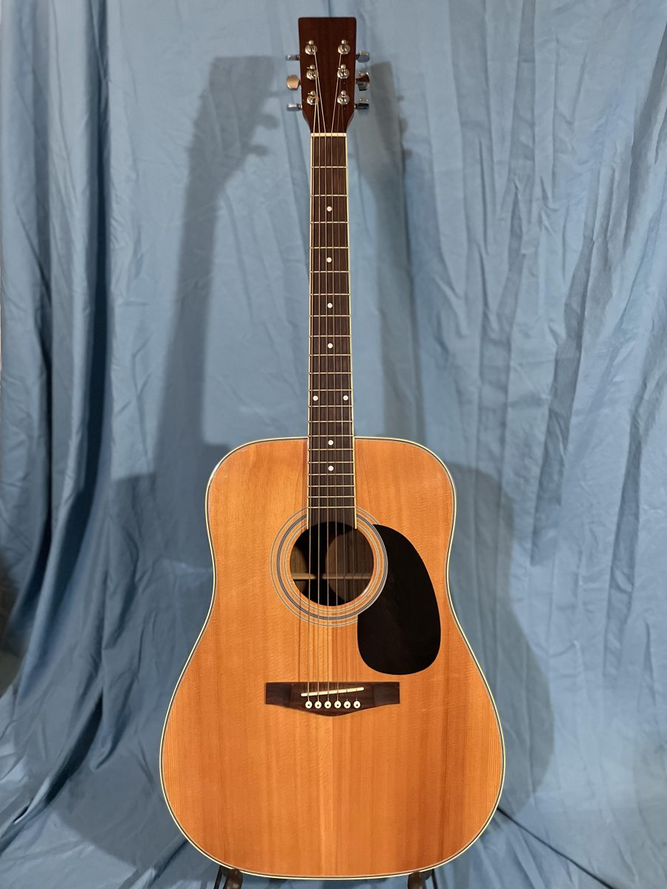
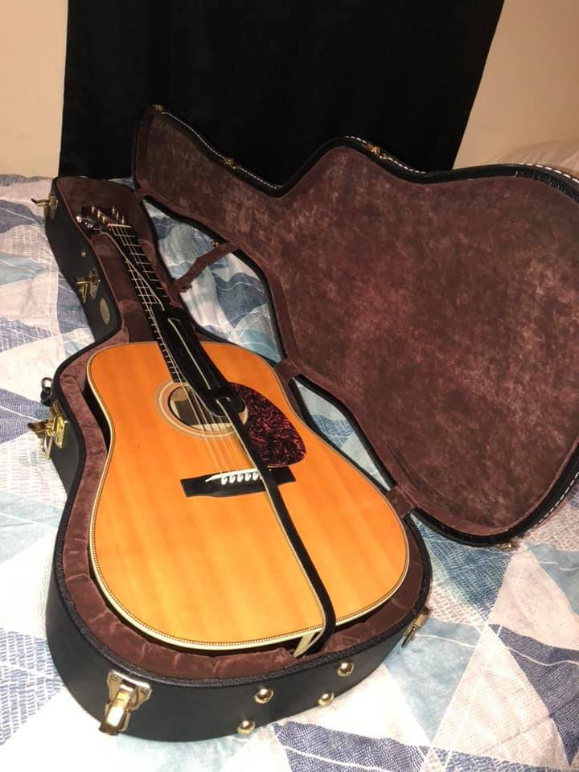
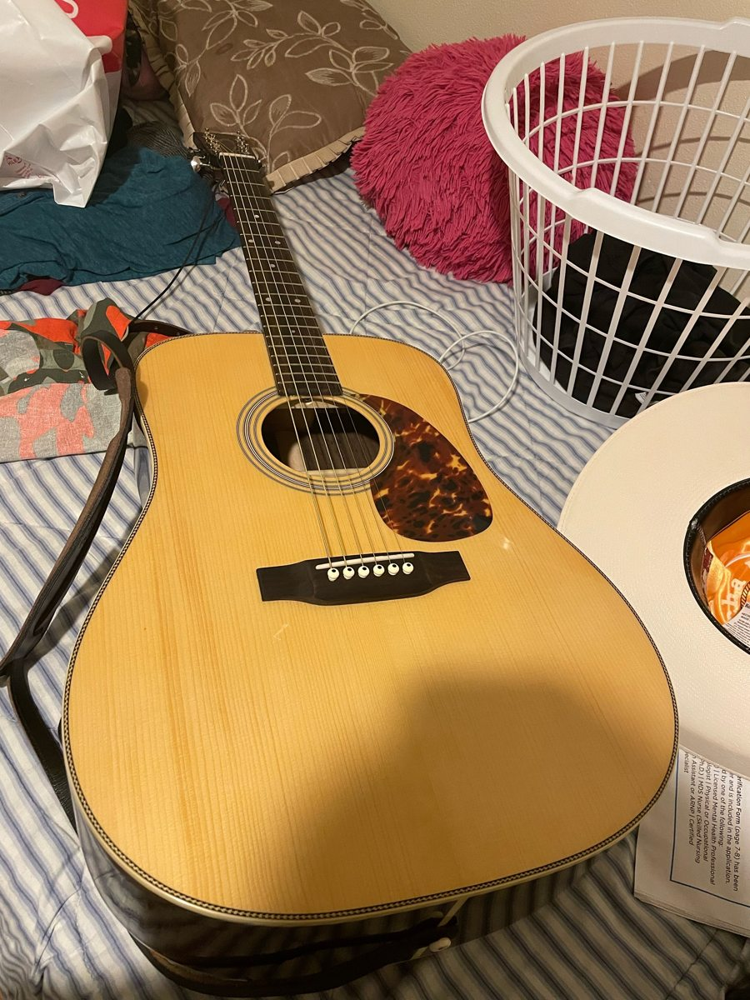
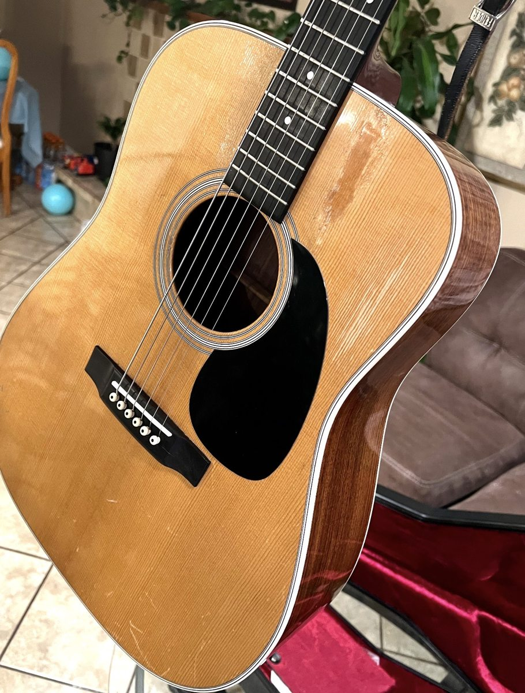
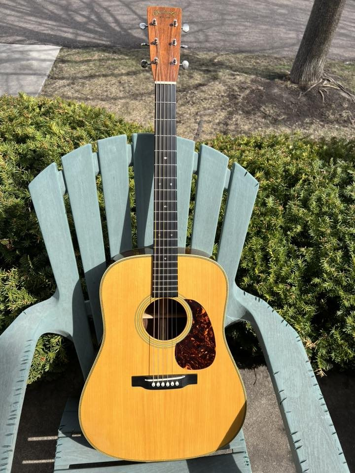
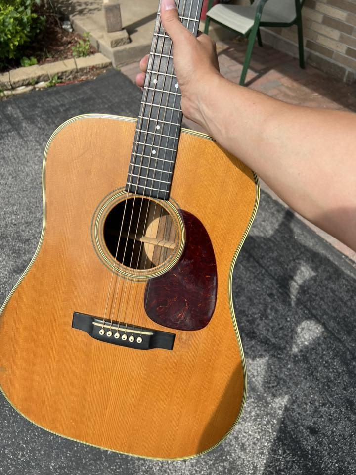

My Guitars: From First Guitar to Vintage Martin
This page describes my journey with each guitar I've owned, including their construction, tone, and why I chose to keep upgrading. Each guitar taught me something new and brought me closer to finding the perfect vintage sound.
-

Takamine EG531SSC (June 2017)
This Takamine was my very first guitar, and I learned how to strum my first chords on it. The EG531SSC featured a solid Sitka Spruce top with sapele back and sides. Sapele is a mahogany-like tonewood from Africa that's commonly used on entry-level to mid-range guitars as an affordable alternative to rosewood. While it looks similar to mahogany with its reddish-brown color, sapele has a brighter, slightly more focused tone. It wasn't the warm, rich sound I was ultimately searching for, but it was perfectly fine for learning.
Takamine uses traditional X-bracing on their steel-string guitars, where the internal support beams form an X shape under the soundhole. The soundboards are hand-voiced, meaning a skilled luthier taps each top to determine how to shape the braces for optimal response. This attention to detail made the Takamine sound better than most beginner guitars in its price range. The guitar also came with a cutaway body design and built-in TK4NT electronics, which allowed me to plug it into an amplifier. This was great for learning because I could practice both acoustically and amplified. The dreadnought body shape gave it decent volume and projection, with strong bass response typical of that design.
I played this guitar for about six months, and while it was a solid beginner instrument with good construction quality, I quickly realized I wanted something with a fuller, warmer tone. The sapele back and sides just didn't have the depth and complexity I was looking for. This experience taught me that wood choice makes a huge difference in tone, and it pushed me to explore guitars with different tonewoods. I sold it after six months to fund my next purchase.
-

Marlboro Martin Copy (October 2017)
This guitar was a promotional item from Marlboro cigarettes in the 1990s, part of their "Marlboro Miles" reward program where people could redeem points from cigarette packs. These guitars are often called "Marlboro Martins" because they copied the Martin D-28 design exactly, same body shape, headstock, and even the internal bracing pattern. They have no brand name, manufacturer markings, or serial numbers on them, which makes them somewhat mysterious. The quality varied wildly depending on which batch you got, some were reportedly made with solid wood construction, while others like mine were made with cheap plywood. I bought this guitar hoping to get closer to the sound of guitars used by country music legends like Hank Williams, who played pre-war Martin guitars. Unfortunately, mine was made with laminated plywood construction instead of solid wood. Plywood is created by gluing thin layers of wood together, and while it's structurally stable and inexpensive to produce, it absolutely kills the tonal quality of a guitar. Solid wood vibrates freely and resonates, creating rich harmonics and overtones. Plywood is stiff and dead-sounding because the glue between the layers dampens vibration.
The tone was absolutely terrible. It sounded choked up, hollow, and tinny, almost like strumming a tin can. There was no resonance, no warmth, no sustain, just a dead, lifeless sound that made even simple chords sound unpleasant. The guitar also needed structural repairs that simply weren't worth the cost for such a poor-sounding instrument. I sold it within a few months and learned an important lesson: cheap copies are never the answer, no matter how much they look like the real thing. This experience made me realize I needed to save up for a real Martin if I wanted that authentic vintage tone.
-

2006 Martin HD-28V (June 2018)
I remember the day I saw this beautiful guitar listed on eBay. The case, the gorgeous Sitka spruce top, and the beautifully grained East Indian Rosewood back made me fall in love immediately. When I finally received it and played my first chord, the sound was exactly what I had been searching for, big, loud, and extremely responsive to my playing. This was my first real Martin, and it completely changed my understanding of what a quality acoustic guitar could sound like. The "HD-28V" designation tells you a lot about the guitar's construction. The "HD" stands for "Herringbone Dreadnought," referring to the decorative herringbone purfling (trim) around the edges. The "V" stands for "Vintage" meaning Martin built this guitar using construction methods from the 1930s. This guitar had Forward shifted bracing which was used in the 30s, it had a Sitka Spruce top, which is the most common tonewood for modern acoustic guitar tops due to its excellent strength-to-weight ratio and balanced tonal response. The back and sides were East Indian Rosewood, a dense hardwood that produces strong bass response and shimmering treble overtones. Inside the guitar, Martin used a special bracing pattern called "Advanced X-bracing" sometimes called forward-shifted bracing. In this design, the point where the two main braces cross is positioned about one inch away from the soundhole , X crossing in modern Martin guitars are 1 1/2. This placement increases the vibrating area of the soundboard below the bridge, resulting in stronger bass response and more volume. The closer the X crossing is to the soundhole, the more the guitar emphasizes low-end frequencies.
Even more importantly, the braces were scalloped, meaning they were hand-carved into curved shapes like hills and valleys rather than left as flat rectangular bars. Scalloping removes wood from the middle of each brace while leaving the ends taller for structural support. This reduces the weight and stiffness of the braces, allowing the soundboard to vibrate more freely. The result is a louder, more resonant guitar with enhanced bass response and better projection. Scalloped bracing was standard on pre-war Martin guitars but was discontinued in the 1940s to speed up production. Modern vintage style Martins like the HD-28V bring back this labor-intensive technique.
The guitar also featured a long saddle design, meaning the white bone piece that holds the strings at the bridge was longer than modern Martins, which improves string break angle and tone transfer. It had traditional open-back Waverly tuners, a bone nut and saddle for superior tone transfer, and that gorgeous herringbone trim imported from Germany that Martin used in the 1930s. The sound was incredible, warm, powerful, and incredibly responsive. Every note seemed to bloom and sustain forever. The bass was deep and authoritative, the mids were rich and full, and the trebles were clear without being harsh. Playing this guitar felt like stepping back in time to the golden era of acoustic guitar building.
Sadly, this guitar was stolen from me in January 2019, just seven months after I bought it. It was a trade gone wrong. The police never found the thief, and I never recovered the guitar. It was a devastating loss, both financially and emotionally. This was the guitar that opened my eyes to what vintage-style construction could sound like, and losing it was heartbreaking.
-

2021 Recording King RD-328 (August 2021)
This Recording King was another copy of a Martin guitar, but it was much better built than my previous unknown brand guitar. It was a gift, and I appreciated it, but I knew it still wasn't a real Martin. The guitar used Adirondack Spruce for the top (a premium type of wood) and East Indian Rosewood for the back and sides. The sound was definitely better for the price, but it still lacked the depth and richness of a genuine vintage Martin. I played it for about five months before selling it to upgrade.
-

1992 Martin D-28 (March 2022)
This was my second Martin guitar, and it marked a turning point in my journey. Made in 1992, this guitar had aged for 30 years, older guitars often sound better because the wood matures over time. The tone was warm and but not as balanced, It played well. However, after playing it for over a year, I realized I wanted something even older with more of that classic vintage sound. I sold it in October 2023 at a loss because it needed extensive repair, also the guitar was heavy and sounded choked up, I compared this guitar to the 2013 Authentic 1941 and the Authentic blew this one out of the water in tone and weight.
-

2013 Martin D-28 Authentic 1941 (September 2023)
This guitar was Martin's modern recreation of how they built guitars in 1941, which is considered one of the best years for Martin guitars. It had all the vintage features I was looking for: Adirondack Spruce top, scalloped braces, and vintage-style construction throughout. The sound was incredible, loud, rich, and exactly what I imagined a pre-war Martin would sound like. I loved this guitar for a few months, but when I got a chance to buy a 1949 D-18, I sold the Authentic in May 2024 for a significant profit.
-

1949 Martin D-18 (May 2024) (Current)
This was my first true vintage Martin, built in 1949! Over 75 years old!
The D-18 model is slightly different than the D-28 (it has Tortis ciloid decorative trim and mahogany back & sides) the sound was absolutely magical, the bass was less then the Authenticbut that was okay for me, it had the sound of a mahogany guitar, very mid-range focused. Vintage guitars from this era have a tone that modern guitars simply can't replicate because the wood has been vibrating and aging for decades.When I had it appraised in September 2024, it was valued at $12,000 double what I paid for it! The sound was incredible, but after playing it for over a year, I had the opportunity to trade it for an even more valuable vintage Martin. In June 2025, I traded it.
More info about vintage 18 style guitars -

1952 Martin D-28 (old)
This is my old guitar and this was the best guitar I've owned in this journey. Built in 1952, this D-28 is 73 years old (at the time of this writing). The D-28 has more decorative features than the D-18, including grained ivroyed binding, black/white trim, it has a much richer tone. The trade value was approximately $20,000, which shows how much these vintage instruments have appreciated over time.
The sound of this guitar is everything I've been searching for since I started playing, warm, powerful, responsive, and full of character that only comes from decades of aging. I plan to keep this guitar for at least 10 years, waiting for its value to potentially reach $30,000 or more. But honestly, even if the value never increases, I would be happy keeping this guitar forever. After years of upgrading and learning, I've finally found the one.(unfortanitly this guitar had a neck block acrack that went from the back to the top of the guitar on the sideof the neck block, this is what holds the guitar together, i had to trade back, my 1949 D-18 is back home and now worth $15,000 as of Augest 2026) More info about Martin guitars history and changes